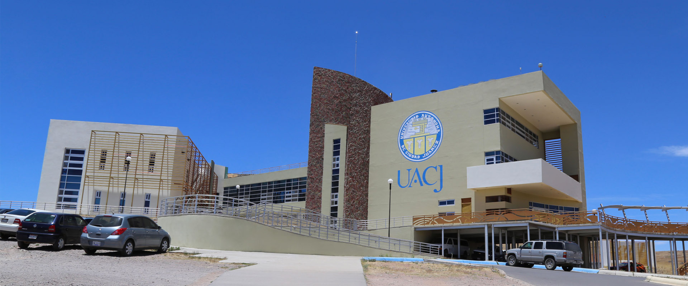

Universidad Autónoma de Ciudad Juárez (UACJ)
.
.
Presentación
En el marco del Modelo Educativo UACJ Visión 2040, la Universidad Autónoma de Ciudad Juárez (UACJ) asume el compromiso de integrar el impacto social como un eje en todas las funciones administrativas. En ese sentido, los procesos que conlleva la investigación científica y la transferencia tecnológica se consideran como un mecanismo de acción para la generación de conocimiento, la resolución de problemas sociales y del sector privado a través de la innovación y desarrollo tecnológico.
.
Misión
La Dirección General de Investigación y Transferencia Tecnológica contribuye al cumplimiento de la misión de la Universidad Autónoma de Ciudad Juárez de crear, preservar, transmitir, aplicar y difundir el conocimiento, así como expender los servicios universitarios mediante la gestión de mecanismos y actividades de apoyo que facilitan el desarrollo de estas tareas en la Investigación y de Transferencia Tecnológica.
.
Visión
La Dirección General de Investigación y Transferencia Tecnológica contribuye al cumplimiento de la misión de la Universidad Autónoma de Ciudad Juárez de crear, preservar, transmitir, aplicar y difundir el conocimiento, así como expender los servicios universitarios mediante la gestión de mecanismos y actividades de apoyo que facilitan el desarrollo de estas tareas en la Investigación y de Transferencia Tecnológica.
.
Oferta Educativa
Lic. en Administración de Empresas
Licenciatura en Arquitectura. Licenciatura en Artes Visuales.
Licenciatura en Biología. Licenciatura en Biotecnología.
Licenciatura en Derecho. Licenciatura en Educación.
Ingeniería en Aeronáutica. Ofertada en Instituto de Ingeniería y Tecnología.
Ingeniería en Aeronáutica
Ingeniería Ambiental
Ingeniería en Agronegocios
Ingeniería Biomédica
Ingeniería en Ciencia de Datos e Inteligencia Artificial
Ingeniería Civil
Ingeniería en Diseño y Automatización Agrícola
Ingeniería Eléctrica
Ingeniería Física
.
Contacto
Dirección General de Investigación y Tranferencia Tecnológica
dgitt@uacj.mx
+52 656 882100, ext. 2296
Edificio de Rectoria
Av. Plutarco Elías Calles #1210
Colonia Fovissste Chamizal, Ciudad Juárez, Chih.
32310
